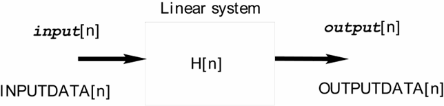
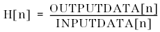
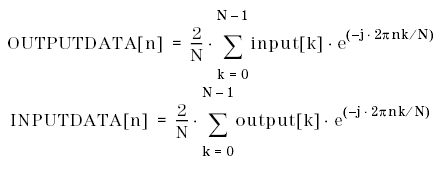
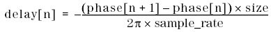

DSP_RESPONSE
This API computes the amplitude, phase, and group delay responses of a linear system.
For a linear system with input data input[n] and output data output[n], DSP_RESPONSE computes the transfer characteristic H[n] as follows:


where
input[k]: |
0 ≤ k ≤ N - 1 |
output[k]: |
0 ≤ k ≤ N - 1 |
INPUTDATA[n]: |
1 ≤ n ≤ N/2 - 1 |
OUTPUTDATA[n]: |
1 ≤ n ≤ N/2 - 1 |
N: |
size |

Then, H[n] is converted from rectangular coordinate data to polar coordinate data. The polar coordinate data is stored into gain and phase.
The group delay response (delay) is calculated as follows:

This API is defined in the header file /opt/hp93000/soc/prod_com/include/MAPI/libdsp.h.
Syntax
DSP_RESPONSE(ARRAY_D& input, ARRAY_D& output,
ARRAY_D& gain, ARRAY_D& phase,
ARRAY_D& group_delay, INT window,
DOUBLE sample_rate);
DSP_RESPONSE(DOUBLE *input, DOUBLE *output,
DOUBLE *gain, DOUBLE *phase,
DOUBLE *group_delay, INT size,
INT window, DOUBLE sample_rate);I/O |
Parameter |
Description / Range |
|---|---|---|
I |
input |
Source array in which input data are stored
|
I |
output |
Source array in which output data are stored
|
O |
gain |
Result array to store amplitude response data (size of gain) ≥ size / 2 Unit: decibels
|
O |
phase |
Result array to store phase response data (size of phase) ≥ size / 2 Unit: radian
|
O |
group_delay |
Result array to store group delay data (size of group_delay) ≥ (size / 2) - 1 Unit: second
|
I |
size |
Number of elements to be processed This number must be a power of two: 1, 2, 4, . . . 1 ≤ size ≤ 2097152 size ≤ (size of input (or output)) size ≤ (size of gain) × 2 size ≤ (size of phase) × 2 size ≤ ((size of group_delay) + 1) × 2
|
I |
window |
Window for FFT RECT: Rectangular window (no window) HANNING: Hanning window HAMMING: Hamming window FLAT_TOP: Flat-top window FBLACKMAN: Blackman window See Window functions.
|
I |
sample_rate |
Sampling rate of source array data Unit: Hz |
Example
DOUBLE input[512], output[512];
DOUBLE gain[512], phase[512], delay[512];
DOUBLE sample_rate;
.
.
DSP_RESPONSE(input, output, gain, phase, delay,
512, RECT, sample_rate);It is assumed that input data and output data are measured. DSP_RESPONSE computes the amplitude, phase, and group delay responses of the linear system, then returns the results togain, phase, anddelay.